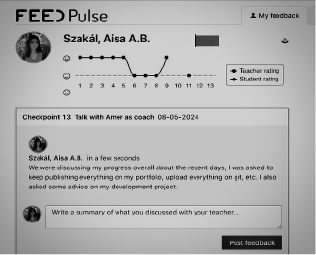
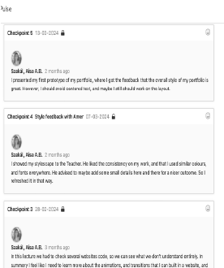
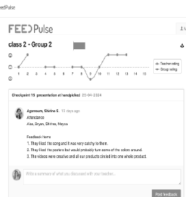

Project 1: Personal Leadership - Demonstration
Seeking feedback from teachers, peers, and our client was essential for both my
personal and group projects. It helped broaden perspectives and ensure decisions
weren't made in isolation. Gathering diverse viewpoints enriched the decision-making
process and contributed to project success.
I regularly reached out to the client through online meetings and emails to gather
feedback, which was vital for our project's progress. The final feedback from the client
was especially positive, emphasizing the value of some of my ideas. This recognition
highlighted the importance of effective communication and collaboration in achieving
success.
As the Teacher's assistant for Thursday lessons, I have the opportunity to gain
insights into file management and other administrative tasks.
For school:
Additionally, I was tasked with conducting research on the new study system in the
media design field. This assignment not only enhances my understanding of the subject
but also provides valuable experience in managing multiple projects simultaneously.
Overall, my interests are focusing on the designing part, since for me that is the most enjoyable part. But I also
learned to find the nice parts of managing a group.
Personal Development:
To develop myself in my free time I started an online course about Logics (https://www.coursera.org/learn/logic-introduction)
for one of my Teacher's recommendation. I am also trying to develop my skills with the Adobe programs
therefore whenever a project requires some designing I always try to take that part of the work
(you can see that in the other learning outcomes)
It is might not really ICT related but I also in a process of learning a language (Italian). I feel like
being able to communicate in more than 1 or 1 languages is an important skill to have, especially, when I wish to
search for a job even in this field.
For Fontys:
Finally I took an opportunity of making a daily vlog kind of video for Fontys.
Making this video was a great way of learning how to face problems, like not to forget to take the videos throughout my day,
which was pretty hard I realized, since it is really not in my routine (you can read more about making this video in LO3).
However, for more information you can read in the document below.


